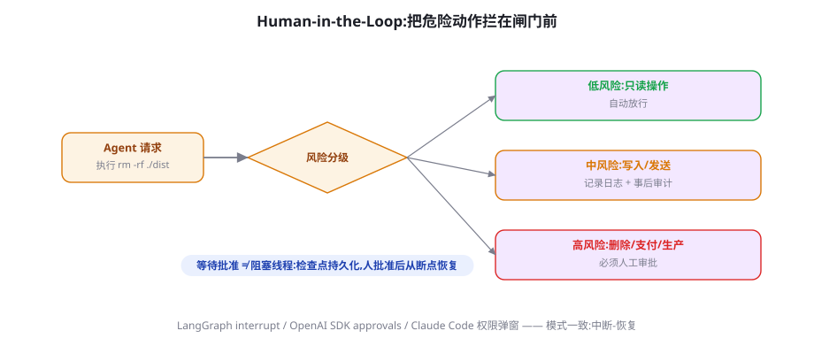

人机协同：审批、中断与恢复
生产级 Agent 与 Demo 的分水岭，是「卡住时怎么办」。本章讲透人机协同的工程化：风险分级、检查点与断点恢复、审批交互设计、以及「信任校准」这个被忽视的产品命题。
风险分级：审批的第一原则是「别问」
人机协同设计的第一反直觉：好的协同是让审批尽量少。每个审批请求都在消耗用户注意力——这种注意力的预算比 token 更稀缺，而且「审批疲劳」会让用户养成无脑点确认的习惯，反而放大风险（安全警告疲劳在安全工程的文献里早有定论，Agent 语境完全同构）。所以设计顺序是：先想办法把动作降到不需要审批，剩下的才设计审批。

| 档位 | 动作类型 | 机制 | 例子 |
|---|---|---|---|
| L0 自动 | 只读、无副作用、可逆 | 直接执行 + 全量留痕 | 搜索、读文件、查询订单 |
| L1 留痕 | 可逆的写入、面向内部的发送 | 执行 + 事后审计 + 一键撤销 | 建草稿、写内部文档、创建工单 |
| L2 审批 | 不可逆、外部可见、资金相关 | 执行前人工确认（含上下文预览） | 退款、发外部邮件、生产发布 |
| L3 禁区 | 政策明确禁止 AI 触碰 | 工具不下发，模型不可见 | 删除生产数据、法律承诺、人事决策 |
把 L0/L1 做厚的方法值得单独列举：只读预演（Agent 先用 dry-run 参数拿到「将会发生什么」）、影子写入（写到一个 staging 区，人看过再发布）、批量降险（一次审批覆盖一批同类低风险动作）。这些机制把「需要人批准的动作」转化为「人知情即可的动作」——协同体验的分水岭就在这里。
检查点与断点恢复：中断是常态，不是异常
审批的本质是长时间停顿——人可能十分钟不批，也可能下班了明天再批。这要求 Agent 的执行引擎支持「随时安全停下、随时无损继续」，即检查点（Checkpoint）机制。工程上的标准形态：
checkpoint = {
"run_id": "run_20260903_001",
"status": "awaiting_approval", # running|paused|awaiting_approval|done|failed
"step_index": 7,
"agent_state": { # 恢复所需的一切
"messages": [...], # 完整对话/轨迹历史
"plan": {...}, # 当前计划与进度(第 18 章)
"vars": {"order_id": "ORD-..."}, # 业务中间变量
},
"pending_action": { # 触发审批的动作
"tool": "create_refund",
"args": {"order_id": "ORD-...", "amount": 29900},
"preview": "将为订单 ORD-... 全额退款 ¥299.00",
"risk_level": "L2",
"requested_at": "2026-09-03T14:20:00+08:00",
"expires_at": "2026-09-04T14:20:00+08:00", # 审批也有过期
},
"history": [ # 此前所有审批决定(审计)
{"step": 3, "tool": "send_internal_msg", "decision": "auto_l1"},
],
}
# 持久化到 Postgres;恢复 = 加载 JSON + 从 step_index 继续
# LangGraph 的 checkpointer / Temporal 的事件溯源,本质都是它三个易漏的细节：审批要过期——24 小时前的退款审批，订单状态可能已变，过期后应作废并让 Agent 重新评估；恢复要做「世界校验」——续跑前重查关键外部状态（订单还在吗？库存还有吗？），不能用旧快照盲目继续；拒绝也是决定——审批人拒绝时要给理由，理由进入 Agent 上下文（「用户拒绝了全额退款，建议改提优惠券方案」），Agent 才能走出有意义的下一步，而不是再提一遍。
审批交互设计：给「批准」加点摩擦，给「拒绝」留条出路
审批 UI 是 Agent 产品里最影响信任的界面，四条实证有效的准则：
- 展示「将做什么」而非「想做什么」：「将向 customer@x.com 发送含订单号的退款确认邮件」比「我建议发送邮件」可批准得多——对象、内容、后果一目了然。
- 默认按钮是安全的：高风险弹窗的默认焦点放在「取消」上。这个细节对抗的正是审批疲劳。
- 拒绝必须低摩擦且能带理由：一键拒绝 + 常用理由快捷项（金额不对/对象错了/时机不对/换个方案）。拒绝理由是 Agent 最宝贵的学习信号（也是将来改进评测集的素材）。
- 批量化与规则化：「本次会话内同类操作不再询问」「对 X 类客户永不询问」——把重复审批升级为一次性授权策略。授权策略要可视化、可撤销，而不是散落在弹窗勾选里。
中断与接管：让用户随时抢方向盘
除了被动审批，用户还需要主动干预：随时打断当前运行、修正方向、或直接接管完成剩余部分。工程上把中断分为三档：软中断——注入一条用户消息，Agent 在下一步读到并遵从（实现便宜，但当前工具调用会执行完）；硬中断——取消未完成的工具调用，回滚到上一个检查点，注入修正后继续（需要工具层支持取消信号）；接管——Agent 交出控制权并把当前状态整理成交接文档，人完成后把结果喂回（此时 Agent 变成记录员）。三档的成本依次上升，产品里应该三档都给，并在文档里教用户什么时候用哪档。Claude Code 的 Esc 打断、LangGraph 的 interrupt、以及各类「暂停并修改」功能，都是这三档的不同实现深度。
用户接管时，Agent 的最后义务是输出一份「交接摘要」：已完成什么（附产物链接）、卡在哪、剩余步骤与注意事项。没有这份摘要，接管等于让用户从中间开始读一部长篇小说。实现上就是一次定向生成（「面向接管者的状态总结」），50 行代码，体验差距却是天壤之别。
案例拆解：三个产品的协同设计
把抽象原则落到三个你大概率用过的产品上，看它们如何在不同场景下做了不同的协同取舍。Claude Code（编码）：权限按「读免批 / 写需批 / 命令分级」组织，支持「会话内不再询问」与「YOLO 模式」（信任环境极高的沙箱内全放行）——它的洞察是开发者对「审查 diff」的成本敏感，所以把审批物做成最可快速判读的形态（代码 diff）。Deep Research 类产品（研究）：协同点前置——开始前确认研究提纲（此时人的一分钟抵执行后的十分钟），执行中不再打断，交付后给引用供抽查。它把「人的位置」放在信息价值最高的时刻。客服 Agent（企业）：协同点后置——机器人全权处理 L0/L1，仅置信度低或用户要求时升级人工（升级本身要带全量上下文，人接手时不需要客户重述）。三个产品的共同点：都把「人的位置」当作首要设计对象，差异只在于各自场景里「人的判断最值钱的时刻」不同。你在设计自己的产品时，第一个要回答的就是这个问题。
教练模式的闭环：把人的纠正变成系统资产
冷启动期的协同不应止于「纠正当次运行」——每一次人工干预都是免费的标注数据。把纠正变成资产的流水线有四站：采集——拒绝理由、人工修改的 diff、接管后的最终版本，全部结构化入库；归因——每周用一个强模型把干预案例聚类（是提示词不清？工具缺失？知识过期？模型能力不足？），归因决定修法；修复——提示词修正、新增工具、补文档、或把案例加入评测集防回归；验证——修复上线后，同类干预的发生率应下降，数字不降说明修错了地方。这条流水线是「教练模式」的本体：它把昂贵的注意力投入转化为持久的系统能力。衡量它的指标是干预率随时间的下降曲线——曲线不降的产品，协同设计一定有结构性问题。
干预率（用户干预次数 / 任务总数）是人机协同的北极星指标，但直接看总量会误导。三个修正：按任务难度归一——把任务按难度分层（简单查询/常规操作/复杂任务），各层各自跟踪干预率，否则难度结构变化会伪装成产品改进；区分干预类型——审批拒绝、打断修正、全面接管是严重度递增的三档，加权统计（如 1:3:10）比裸计数灵敏得多；对照干预质量——用户的干预最终被采纳了吗？大量被 Agent 「说服后撤回」的干预说明审批物呈现有误导。这套修正做完，干预率才从数字变成仪表。
信任校准：人机协同的元问题
协同设计的顶层目标不是「多协同」或「少协同」，而是校准的信任：用户对该信任的地方信任、该怀疑的地方怀疑。信任过高的表现是审批形同虚设；过低的表现是每步都要人盯（Agent 的效率红利归零）。三个校准手段：透明度分级——L0 动作折叠展示、L2 动作全文展开，让「看多少」与「风险多少」成正比；成绩单——定期给用户看「本周 Agent 自动完成 X 项、你批准 Y 项、事后发现问题 Z 项」，数字建立的校准比任何话术都稳；错误的显式记账——Agent 犯错被纠正后，在会话内承认并说明将如何避免（「上次把 A 当成了 B，现在已对该字段做二次确认」）。第 3 章的「实习生比喻」在这里完成闭环：你如何让一个聪明但会犯错的实习生赢得信任，就如何设计这套系统。
规模化审批：从弹窗到工作队列
当 Agent 服务的是企业而不是个人，审批的组织形态要从「弹窗」升级为「工作队列」——一组带上下文的待决事项，由有权限的人在其工作流内批量处理。工程要点有四：路由——按金额、业务线、风险档路由到不同审批人（审批权限本身要建模）；聚合——同类事项聚合展示（「本日 12 笔小于 ¥100 的退款」一次审批）；SLA——审批超时策略显式化（转上级/自动拒绝/自动放行，按业务风险选择，默认应偏保守）；闭环回写——审批决定与理由回写 Agent 上下文与审计库。工作队列模式还顺手解决了「审批人不在」的组织难题：任何有权限者可代批，全部留痕。从弹窗到队列，是把「人机协同」从产品特性升级为组织流程的分界线。
授权的渐进转移：一个可操作的框架
「什么时候可以把某类动作从 L2 降到 L1？」给出一个数据驱动的框架。对每类动作维护三个滚动指标：样本量（该动作被审批过多少次）、人工否决率（被拒绝的比例）、事后事故率（批准后出问题的比例）。转移规则示例：样本 ≥200、否决率 <5%、事故率 <1% → 降级为 L1 并保留 10% 抽审；抽审期事故率抬升 → 自动回退 L2。这个框架把「信任给多少」从感觉问题变成统计问题，也天然给出了灰度发布的安全边界。它还有个组织学的好处：降级与回退都有数字依据，安全团队的审查会顺畅得多。
审计与追责：出事之后要能说清楚
人机协同系统的审计问题比传统系统尖锐，因为「决策者」的界限模糊了。审计设计要能回答四连问：当时 Agent 想做什么？依据是什么？谁批的？批的时候看到了什么？对应四项留痕：完整意图（Agent 的计划与调用参数）、依据（当时上下文的快照——包括它检索到什么）、决定链（自动放行规则命中 / 谁在何时批准）、展示物（审批界面当时的预览内容——预览改版后历史审批的「当时所见」要可重建）。这四项存齐，责任划分（模型错、配置错、还是审批人错）才有事实基础。监管视角（第 65 章）越来越把「人类监督的有效性」作为合规要件——审计留痕不是法务的负担，而是 Agent 产品在机构客户面前的入场券。
特殊形态：批量任务与后台任务的协同
当 Agent 在后台批量运行（夜间处理 500 张发票），「弹窗」彻底失效，协同要重新设计为事后驱动：运行前设定策略（置信度低于 X 的一律进入人工队列，其余自动完成）；运行中零打扰，仅重大异常触发即时通知；运行后交付「分组结果报告」——自动完成清单（可抽审）、待人工清单（按风险排序）、异常清单（附原因）。这个形态下的核心指标从干预率变为自动通过的正确率与人工队列的单位处理时间——前者衡量 Agent 水平，后者衡量你给人工准备的上下文质量。很多团队只优化前者，结果人工队列的堆积成了新的瓶颈：协同设计的对象始终是「整条流水线的吞吐」，不是 Agent 的单点表现。
反模式清单：协同设计的六个常见坑
- 审批轰炸：所有动作都要批——用户三分钟养成盲批习惯，风险防线整体失效。对照第 25.1 节把 L0/L1 做厚。
- 审批物是谜语：「确认执行 send_email？」——不告诉对象与内容。审批物必须自包含（对象、内容、后果）。
- 拒绝无出口：只能批准或关闭弹窗。拒绝理由既是当次修正的输入，也是长期改进的数据。
- 断点即丢失：审批等待期间进程重启，一切从头再来。检查点是审批功能的前置依赖。
- 信任单行道：授权只有给没有收。策略必须可视化、可撤销、可自动回退。
- 把「人在环」当免责声明：塞一个人审环节就宣称「有人工监督」，但人只有两秒和一行信息——这种审批在监管与事故面前都不构成防线。监督的有效性与形式同等重要（第 65 章）。
实现地图：机制落在哪一层
把本章机制映射到系统的四层，方便你定位自己要写的代码。工具层：风险档位作为工具元数据（risk_level: "L2"）、dry-run 参数、幂等键（第 17 章）；运行时层：检查点序列化、审批暂停/恢复状态机、过期定时器（LangGraph checkpointer、Temporal 都在这层）；应用层：审批 UI 与工作队列、策略引擎（授权规则）、干预采集；数据层：审计库（意图/依据/决定链/展示物四件套）、干预案例库（教练闭环的原料）。四层的责任必须分明——最常见的架构错误是把策略写在弹窗代码里（应用层越权），导致换一个客户端（如从 Web 到 IM 审批）策略就丢。策略的唯一居所是策略引擎，客户端只是呈现。
把审批 UI 当作受攻击面看待：间接注入可以诱导 Agent 生成「看起来无害」的审批预览（「向 team@company.com 发送会议纪要」——实际工具参数却是外部地址）。防线有三：审批预览必须由系统从工具实参直接渲染，而不是让 Agent 自由撰写预览文本；高危动作的参数在展示层做二次高亮（外部域名、异常金额自动标红）；预览与实际执行之间参数不可变（批准的是哪个 JSON，执行的就必须是那个 JSON，哈希绑定）。这三条把「人审的是真实意图」变成可验证的性质——它们在安全审查中被反复验证为注入类攻击的最后防线（第 59 章会从攻击者视角再走一遍）。
升级设计：当 Agent 决定求助
与人审相对的是 Agent 的主动求助（escalation）——它比审批更考验设计，因为「何时该求助」没有天然的调用点。求助信号有四类，应该在系统提示词与代码两侧同时配置：置信不足——分类器的置信度低于阈值或模型自报「不确定」（第 9 章的校准在此兑现价值）；情绪升级——客户表达强烈不满或提及法律/媒体（情感分类器 + 关键词双通道）；越界请求——任务落在政策禁区边缘（「帮我把数据导出到个人邮箱」）；重复失败——同类操作失败两次后，第三次的正确动作往往是求助而不是再试一次。求助动作本身要「带完整的自己」：上下文摘要、已尝试方案、建议选项，让接手者零冷启动。衡量求助设计的指标是一对张力：求助率过高说明 Agent 太怂（价值没兑现），求助后的一次解决率说明求助是否有效——两者合看才是求助系统的健康度。
把机制降到最小可行集：① 工具元数据加 risk_level 字段，L2 工具在执行前打印预览并等终端确认（一行 input() 即可）；② 执行状态序列化为 JSON 落盘，进程重启可续跑；③ 所有审批决定（含拒绝理由）追加进 JSONL 审计文件。这三件做完，你的个人 Agent 就有了刹车、安全带与行车记录仪——本章其余内容，等它有第一个真实用户时再建不迟。
协同模式的谱系：从旁观到全权
| 模式 | 人的角色 | 适用阶段 | 工程要点 |
|---|---|---|---|
| 旁观模式 | 只看 trace 不干预 | 新品内测、高价值账号试点 | trace 面板 + 周报 |
| 闸门模式 | 审批高风险动作 | 生产默认 | 风险分级 + 检查点 |
| 教练模式 | 频繁纠正，Agent 同步学习 | 冷启动期、规则沉淀期 | 拒绝理由入库 → 提示词/评测更新 |
| 委派模式 | 只定目标与验收 | 信任建立后的成熟场景 | 事后抽审 + 快速回滚 |
三个高频疑问
Q：审批人应该看到多少上下文？给「够判断的最小集」：动作全貌（对象/内容/后果）+ 关键依据（Agent 为什么这么做）+ 风险提示（金额、收件人、不可逆性）。不要给完整轨迹——审批人没有读十轮历史的义务，而且冗长上下文会系统性提高「直接批准」的概率（研究上一致发现：信息过载使审批退化为橡皮图章）。
Q：要不要用「AI 审批 AI」替代人？可以用「评审模型」做预筛（明显有问题的先拦下，减少人的负担），但终审权重必须归人，尤其 L2 档。原因不在技术而在责任：只有人的决定才构成「人类监督」的合规事实。评审模型的正确身份是「给审批人的助手」——标注风险点、比对历史案例，而不是替人签名。
Q：用户就是不批也不拒怎么办？挂起的审批会阻塞任务，也占用资源。三层处理：到期前提醒（一次）；到期按预设策略处理（默认建议「自动拒绝 + 通知」——保守且不产生未授权动作）；频繁悬挂的用户在产品层引导其调整授权策略（「如果你常不在线，考虑给此类动作开免审」）。悬挂审批本身是个产品信号——说明授权策略与用户习惯错位。
通向第三部分：从机制到产品
本章收官了第二部分（核心机制篇）。回顾这 12 章建立的完整机制栈：Agent Loop 是心脏（第 15 章），ReAct 与工具是手足（第 16-17 章），规划与记忆是前后脑（第 18-19 章），RAG 是食物（第 20-21 章），反思是自我修正（第 22 章），上下文工程是呼吸（第 23 章），多 Agent 是社会性（第 24 章），人机协同是文明（第 25 章）。第三部分（工程与框架）将回答「用什么现成工具承载这些机制」——你会发现每个框架都在对这套机制做不同取舍的封装。带着本章的问题清单去读框架篇：它的审批怎么实现？检查点存什么？策略住哪一层？——用机制的眼光看框架，框架文档就不再是 API 清单，而是一组设计决策的展开。
最后一个建议写给个人开发者：不要因为「这是企业话题」而跳过本章。哪怕你的 Agent 只有你一个用户，检查点（防进程崩溃）、风险分级（防误删自己的数据）、交接摘要（防接管时抓瞎）这三件套都能立刻改善你的日常体验。人机协同的机制是按「规模无关」设计的——它们保护的对象，从一个人的数据到一家公司的合规，逻辑完全一致，变的只是审批人的数量与队列的长度。把本章的机制当成 Agent 的「刹车与安全带」：不是因为你打算飙车，而是因为装了它们之后，你才敢开快。
把本章放进更长的时间轴上做一个展望性的收尾：随着模型能力上升，「哪些动作需要人审」的清单必然持续缩短——但协同设计的重要性不会同步下降，因为它管理的从来不只是「风险」，而是「责任的分配」。只要组织仍要对 Agent 的行为负责（法律上、商业上、伦理上），就永远需要某个机制把「机器的判断」转化为「组织的决定」——审批、检查点、审计与求助，就是这个转化得以完成的四根承重柱。模型越强，柱子越少但越关键。这也是为什么第 65 章讨论治理时会回到本章：治理的落地形态，就是本章机制在组织层面的投影。
本章小结
- 协同设计第一原则是减少审批：把动作降到 L0/L1，只对不可逆与外部可见动作设闸门。
- 审批 = 长时间停顿：检查点持久化、审批过期、恢复时世界校验、拒绝理由入上下文。
- 审批 UI 四准则：展示将做什么、默认安全、低摩擦拒绝、批量授权策略化。
- 中断分三档（软/硬/接管），接管必须输出交接摘要。
- 顶层目标是信任校准：透明度分级、成绩单、错误显式记账。
- 教练模式的闭环把人工干预变成系统资产：采集→归因→修复→验证，北极星是干预率下降曲线。
- 授权转移用数据框架：样本量、否决率、事故率三指标决定动作档位的升降。
- 审计四连问（想做什么/依据/谁批/当时所见）是机构客户入场券；审批预览须由实参渲染并可哈希绑定。
自测题
- 把你的产品动作清单分进 L0~L3 四档。哪几个动作的档位团队内部会有分歧？分歧说明什么？
- 为什么「审批过期」比「审批等待」更重要？不做过期机制会发生什么具体事故？
- 「拒绝理由入上下文」如何同时改善当次运行与长期质量？各举一个机制。
- 设计你产品的「成绩单」：列出三行最有说服力的统计，以及它们各自的采集点。
参考文献与延伸阅读
- LangGraph (2024). Human-in-the-loop 文档：interrupt 与 checkpointer. langchain-ai.github.io/langgraph
- Anthropic (2024). Claude Code 权限模式与审批交互. docs.anthropic.com
- Amershi, S. et al. (2019). Guidelines for Human-AI Interaction. CHI 2019.（18 条人机协同设计准则的奠基文献）
- Bansal, G. et al. (2021). Does the Whole Exceed its Parts? The Effect of AI Explanations on Complementary Team Performance. CHI 2021. arXiv:2009.06945
- Temporal (2024). Durable Execution 概念文档. docs.temporal.io（检查点与恢复的通用基础设施）